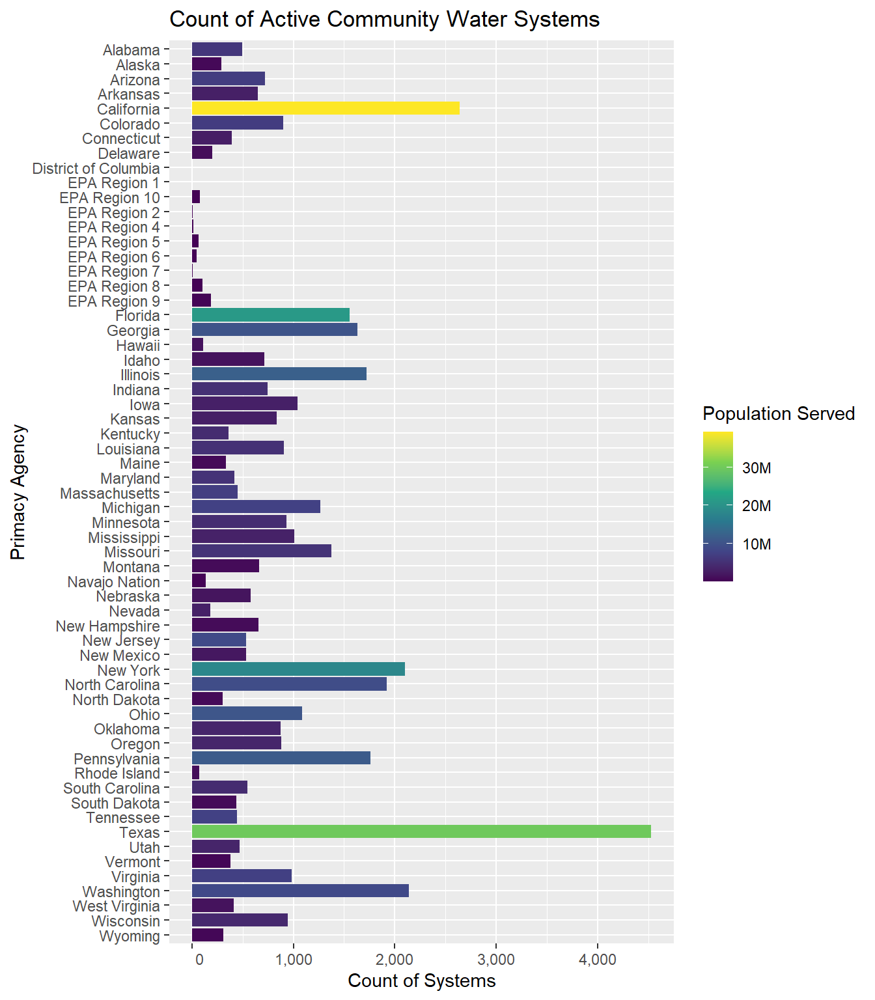
ORD Service Area Boundary Model Documentation
Disclaimer
This document is distributed solely for the purpose of pre-dissemination peer review under applicable information quality guidelines. It has not been formally disseminated by the U.S. Environmental Protection Agency. It does not represent and should not be construed to represent any agency determination or policy.
Version 1.0
SDWIS Data Vintage: 2023 (Quarter 4)
The Office of Research and Development has released a publicly available dataset of community water system (CWS) service area boundaries (SAB). CWS are defined as systems that provide water for human consumption through pipes or other constructed conveyances to at least 15 service connections or serves an average of at least 25 people year-round (U. EPA 2022). Under the safe drinking water act (SDWA) and various drinking water rules public water systems must test and report on the quality of their drinking water (Act 1974). These boundaries enable linking SDWA violations to their associated geographic areas, and concomitantly linking treated community water system water to their respective customers. This service area boundary dataset is a combination of publicly available service area boundaries and modeled boundaries. This document describes how the data was collected and modeled and details the modeling techniques used to generate this dataset.
List of Acronyms & Abbreviations
| Acronym / Abbreviation | Description |
|---|---|
| CWS | Community Water System |
| HBSL | Health-Based Screening Level |
| HIFLD | Homeland Infrastructure Foundation-Level Data |
| MCL | Maximum Contaminant Level |
| NHGIS | National Historical Geographic Information System |
| OOB | Out-of-Bag |
| ORD | EPA Office of Research and Development |
| OSM | Open Street Map |
| PWSID | Public Water System Identifier |
| SAB | Service Area Boundary |
| SDWA | Safe Drinking Water Act |
| SDWIS | Safe Drinking Water Information System |
Summary
Public water systems regulated under SDWA are required to treat their drinking water. A sample of 931 public wells found that “one or more chemical contaminants were detected at concentrations greater than MCLs or HBSLs in more than one in five (22 percent)” of the sampled wells (Toccalino, Norman, and Hitt 2010). This substantiates the need for federal requirements; these samples were collected prior to treatment and treatment processes, or dilution can substantially reduce the risk of contaminants getting to the consumer. While federal standards help reduce the likelihood of contaminated drinking water, of the total universe of public water systems in the U.S., 6% reported to have violated a health-based drinking water standard and 29% failed to meet at least one monitoring or reporting requirement in 2022 (U. S. EPA 2023). Community water systems have testing and reporting requirements that may increase based on the size of the system, compliance history and local or state specific requirements. While the source of water for a home may be a primary determinate of its quality, the type of system, whether private, mobile home park, small community water system, or large community water system can play an equally important role in the ability for a system to have adequate treatment processes. It is therefore critical that we understand where people are sourcing their water, who is consuming the water, and how it is delivered to their home in order to more completely understand regional and national trends of water quality and the health impacts to the public. This research on the extent of public water use leverages a new spatial disaggregation technique to increase the spatial resolution of public supply estimates in addition to using machine learning techniques to estimate the total number of housing units getting their water from public sources in 2020 at the census block level. After that is achieved we use a random forest model to associate the corresponding public water system ID to each census block identified
The boundaries presented in this dataset are an aggregate of several methods used to present the most accurate representation possible with available data. These methods range between simple collection of public service area data to complex machine learning techniques. Each method is described in detail.
SDWIS Reporting Universe
The current ORD dataset (Version 1.0), uses the 2023 (Q4) release of SDWIS data. As of this release, there were a total of 49,396 active community water systems, which primarily serve residential areas (Figure 2). There are many systems, however, which primarily wholesale water to other systems, meaning they do not directly serve water to consumers and therefore do not have a service area boundary. These systems simply source water and deliver it to other systems, who then serve individual customers. The universe of systems in our efforts is limited to currently active community water systems which serve at least 15 service connections or serves an average of at least 25 people for at least 60 days a year. The total number of systems that fit this criteria for 2023 (Q4) is: 46,103. Currently, this dataset does not include service areas for U.S. territories (Puerto Rico, American Samoa, Guam, , Commonwealth of the Northern Mariana Islands, U.S. Virgin Islands).
Count of Systems by Primacy Agency
Community water systems each fall under a primacy agency, which is the agency with primary responsibility for implementing SDWA, this is typically the state or territory. The exceptions, where EPA is the primacy agency are Wyoming, the District of Columbia, and federally recognized tribes excluding Navajo Nation. Navajo Nation is currently the only tribe with primacy agency status to enforce SDWA.
Systems by Type of Service Area
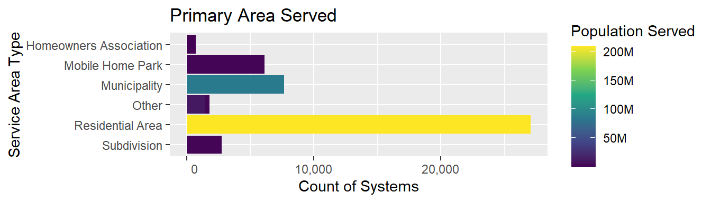
State Data
When detailed public water service area boundaries are publicly available from state or municipal sources, we consider that to be the highest quality spatial data possible. A detailed review was conducted of available data and used to determine what would be included in the ORD national map versus what would be modeled. Detailed descriptions of state data are available in the state boundary appendix.
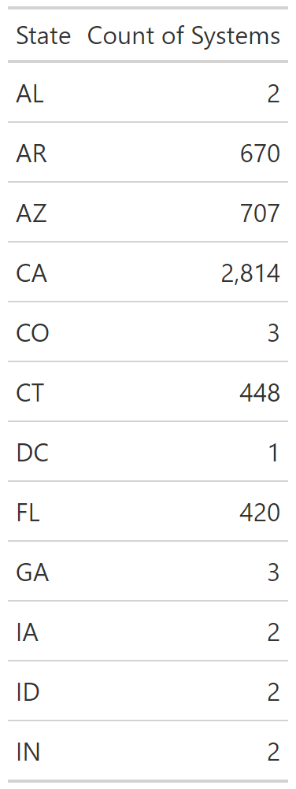
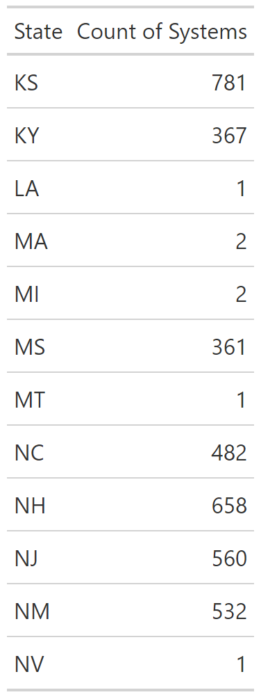
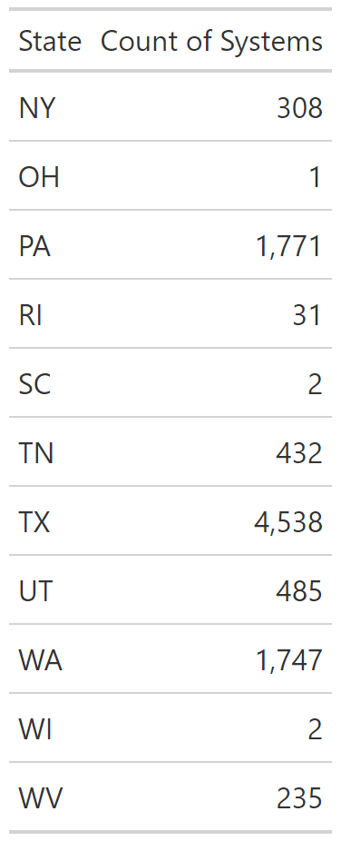
Place Matched Service Area Boundaries
Mobile Homes - OSM
Areas delineated as mobile home parks were extracted from Open Street Map and fuzzy name matched with community water system names reported to SDWIS. To find open street map delineated areas, the point locations for mobile home parks from Homeland Infrastructure Foundation-Level Data (HIFLD 2023) was intersected with areas tagged as ‘residental=trailer_park’ in open street map. If an intersection occured, the given names of that mobile home park (from both sources) were matched with SDWIS reported names.
Mobile Homes - Parcels
Where open street map delineated areas were not present, point locations of mobile home parks from HIFLD (2023) were intersected with parcels from REGRID (2023). The name of the mobile home park was then fuzzy matched with SDWIS reported system names.
Modeled Service Area Boundaries
Binary Water Use Model
A decision tree model was created to determine the probability that a census block is served by a public water system. This model was levered in two different ways: 1.) to aid in the 1:1 matching discussed later and 2.) as a model input (explanatory variable) for the random forest model. The variables included are listed in Table 2. To validate the model, public water systems from three states (New Jersey, Connecticut & California) were joined to census blocks to classify the intersecting blocks as public water users. These three states were chosen based on the completeness and detail of their service area boundaries. The final decision tree model (Figure 3) predicted the type of water supply correctly in 93.14% of blocks in the testing dataset which was removed prior to training. The accuracy of public use (sensitivity) was 95% and the accuracy of private use (specificity) was 81%. A secondary validation was performed using data from Washington, which was never exposed to the model for training (Table 3) For more details on this initial model, refer to the 2020 Water Source Model GitHub Site.
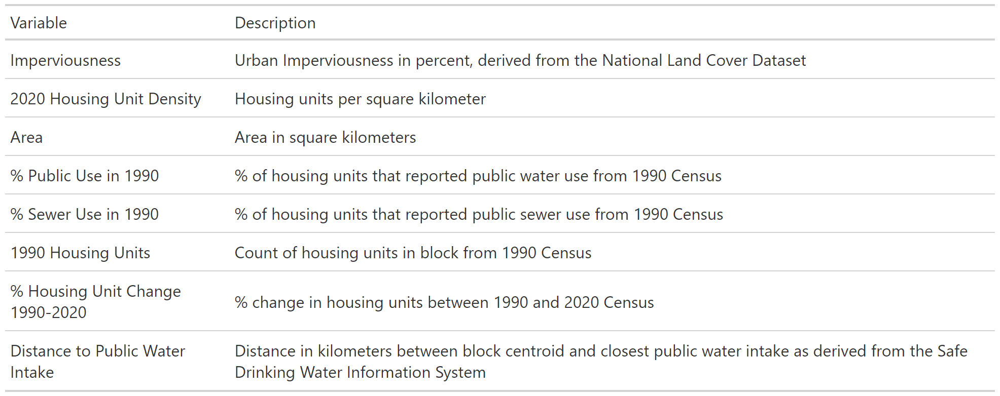
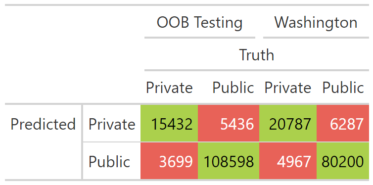
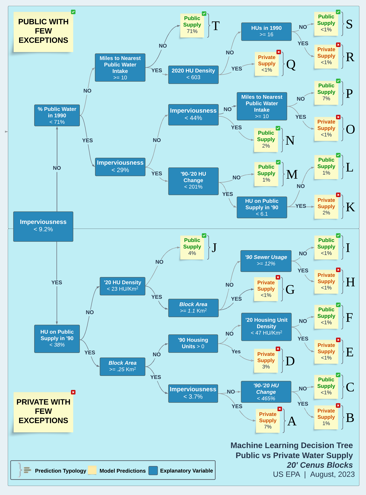
1:1 Match
Census blocks that are predicted to be served by public water by the binary water use model (Figure 3) are ‘aggregated’ or ‘dissolved’ spatially, meaning they are combined with any contiguous blocks that are also estimated to be served by public water systems into larger polygons. A public probability threshold of .7 and higher was used to classify block as exclusively on public water. These aggregated polygons are then spatially joined with facility locations from SDWIS, which include intakes, wells, and treatment plants. If a single aggregated area can only be associated with facilities from a single public water system, that area is assigned its associated PWSID.
As a general approach to modeling, simplicity is typically preferred over complexity. The 1:1 matching was an attempt to resolve system assignments in a very simple way, eliminating the need for more complex random forest modeling. Approximately 8,000 systems were assigned (or matched) using this method. This method leveraged the decision tree output to determine system boundary size. Since the model provided confidence levels associated to every block, from 0=confident that that the block is privately supplied; to 1= confident that block is publicly supplied. We found that a value of 0.7 closely approximated the system boundary size and shape when compared to state supplied boundaries. After applying this criteria, we sought to match the system boundaries to their associated PWSID. Spatially continuous blocks were aggregated together into larger polygons.
To determine a match, we used SDWIS locations (wells, treatment plant, intakes) and SDWIS locations (reported system addresses that we geocoded) to conduct a spatial join to the aggregated decision tree boundaries (at 0.7 confidence). The logic here is that for some systems there is only one PWS that serves the polygon area—as opposed to a more complex nested set of systems within a single polygon. More complex systems are mainly associated with urban and suburban areas where the simple systems are largely associated with smaller to mid-size towns in rural areas. The other assumption we had was that it is more likely that a system’s infrastructure is close to the population that it serves than farther away.
We performed a spatial join on all decision tree boundaries and SDWIS locations. If more than one unique system was joined, those boundaries were returned for random forest modeling. If only one PWSID was returned for a polygon we validated that the joins were associated with the correct PWS. To do this we performed a graphical validation method by regressing the service connection of the joined public water system against the sum 2020 housing units within the modeled boundary. Because each state uses a different formula for calculating the service connections, these regressions had to be limited to intra-state comparisons. In other words, the regressions coefficients could vary widely between states, creating an “apples-to-oranges” comparison. The regression was trimmed to systems that fell close to the 1-to-1 regression line. Systems that deviated from that line were removed for later random forest matching. Figure 4 is an example of Iowa systems that were matched using this graphical method for matching systems.
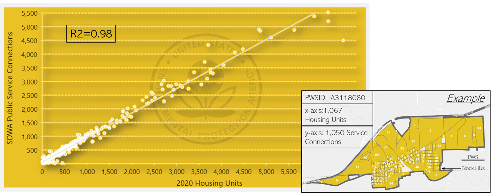
Random Forest
The goal of the random forest model is to be able to determine what public water system (or PWSID) a census block is most likely to be served by. For example, a block in a rural area that is using public water may be more likely to be close to its source water intake if it is a very small system and more likely to be farther away if it a very large rural water district. If you are served by a system that purchases all of its water, the infrastructure may be farther away as well.
The random forest is set up to evaluate the relationship between a single census block and a single point associated with a public water system. The tabular data used to train and apply the random forest model has one row for the relationship between every block and every unique PWSID within 25 miles (as determined by CWS infrastructure such as wells, treatment plants, facility addresses, and intakes). As an example, if there are seven different facilities within twenty-five miles of a census block, the table used for the random forest will have seven rows for that census block. Each facility is associated with a parent PWSID. The random forest model then predicts a probability that the parent PWSID is serving the census block in the same row of the table. Predictor variables can be thought of as belonging to one of two groups:
- Variables that that characterize the census block
- Variables that characterize the water system.
The random forest model then determines the correct interplay between the variables to determine a probability that a particular system serves a particular census block or is not served by a public water system at all.
Variables that Describe the Census Block
Population
Variable Name: Population
Population is taken from the 2020 Census, obtained at the census block level from ‘2020_DHCa’ downloaded from NHGIS (Manson et al. 2023).
Local Population Density
Variable Name: Pop_km
The centroid of each block is buffered by 2 miles (3,218.69 meters). The population density is then calculated as an areal weighted population density of census blocks that intersect the buffer. This variable informs each block of its surroundings—in particular how dense is the nearby city, suburb or rural area.
Area
Variable Name: Area_Km
Area is calculated for each block in square kilometers using the Albers equal area projection (crs = 5070).
Probability of Public Water
Variable Name: Prob_Pub
The probability (0-1) of a block being served by public water as estimated from the ORD water use decision tree model (Figure 3).
Buildings
Variable Name: nBuildings
The number of buildings within a census block that are greater then 50 square meters in area. This is calculated using Microsoft building footprints (Microsoft 2023). We use a cutoff of 50 square meters to remove smaller buildings such as detached garages and sheds (Figure 5).
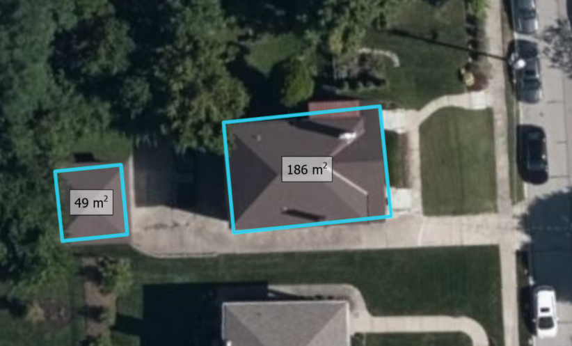
Percent Buildings
Variable Name: PctBldg
The percent area of the census block that is covered by buildings. This is calculated as the total area of microsoft building footprints divided by the area of the census block (Microsoft 2023).
Mean Building Area
Variable Name: meanBldg_m
The mean area in square meters of buildings within the census block (Microsoft 2023).
Minimum Building Area
Variable Name: minBldg_m
The area in square meters of the smallest building within the census block (Only buildings greater than or equal to 50 square meters included) (Microsoft 2023).
Maximum Building Area
Variable Name: maxBldg_m
The area in square meters of the largest building within the census block (Only buildings greater than or equal to 50 square meters included) (Microsoft 2023).
Standard Deviation of Building Area
Variable Name: sdBldg_m
The standard deviation of area of buildings in square meters within a census block (Microsoft 2023).
Rural / Urban
Variable Name: PctRural
The census defined urban / rural classifier; A binary classification, in which to qualify as an urban area, the block identified must encompass at least 2,000 housing units or have a population of at least 5,000 for 2020 (census block level). The dataset used is ‘Urban and Rural’ from ‘2020_DHCa’ at the census block level, obtained from NHGIS (Manson et al. 2023)
Mean Residential Acres
Variable Name: meanResAcres
The mean value in acres of parcels within the census block that are zoned for residential use (REGRID 2023).
Count of Parcels
Variable Name: nParcels
The total count of parcels within the census block (REGRID 2023).
Count of Mobile Homes
Variable Name: MH_Count
The count of mobile home communities within a census block as derived from the Homeland Infrastructure Foundation Level database (HIFLD 2023).
Mobile Home Size
Variable Name: MH_Size
The cumulative size of mobile home parks within a census block representing the number of mobile home units (HIFLD 2023). This variable is presented as a factor.
Possible Values:
| Value | Description |
|---|---|
| ‘50’ | <50 Mobile Homes |
| ‘75’ | 50-100 Mobile Homes |
| ‘100’ | >100 Mobile Homes |
Variables that Describe the Closest Systems
Distance
Variable Name: Facility_Dist The distance in meters between the census block centroid and a single point from SDWIS for a system.
Distance Rank
Variable Name: Dist_Rank
Describes the closeness rank of the particular facility being measured to. For example, if Dist_Rank = 5, there would be 4 other facility points closer to the centroid of that census block.
Facility Type
Variable Name: Facility_Type
The type of system point that was used in the distance calculation. Options include:
- “Well”
- “Treatment Plant”
- “Consecutive Connection”
- “Intake”
- “Other”
The ‘Other’ Category contains less frequent data and data used when there are no wells, intakes or treatment plants associated with a system. Some examples of less frequent locations are springs, reservoirs and infiltration zones. This class also contains the administrative contact addresses of systems as reported to SDWIS which are typically within a service area but are also known to be unreliable depending on the system. Administrative contact addresses were geolocated and curated to only include street intersections or better.
Population Served
Variable Name: Population_Served_Count
The reported population that is served by the system in SDWIS reporting.
Connections
Variable Name: Service_Connections_Count
The reported number of service connections within a system in SDWIS reporting.
Distance to Center of System
Variable Name: Ctr_Dist
If a system has more than one SDWIS point (intakes, wells treatment plants etc…) the mean center of all points is calculated and measured in meters from the centroid of the census block. If only one point exists within a system, this value will be identical to Facility_Dist.
System Type
Variable Name: Service_Area_Type
The Primary type of area that is served by the public water system.
Possible Values:
- ‘Homeowners Association’
- ‘Mobile Home Park’
- ‘Multiple’
- ‘Municipality’
- ‘Other’
- ‘Residential Area’
- ‘Subdivision’
Sub-County Match
Variable Name: SubCounty_Match
Reflects a classified Jaro-Winkler string distance between the census place the census block is within and the ‘City Served’ of the public water system associated with the point being measured to.
| Jaro-Winkler Distance | Classification |
|---|---|
| <0.1 | “Full Match” |
| >0.1 & <0.3 | “Partial Match” |
| ≥0.3 | “No Match” |
| if no census sub county | “No SubCounty” |
| if no city served | “No City Served” |
Place Match
Variable Name: Place_Match
Reflects a classified Jaro-Winkler string distance between the census place the census block is within and the ‘City Served’ of the public water system associated with the point being measured to.
| Jaro-Winkler Distance | Classification |
|---|---|
| <0.1 | “Full Match” |
| >0.1 & <0.3 | “Partial Match” |
| ≥0.3 | “No Match” |
| if no census place | “No Place” |
| if no city served | “No City Served” |
County Match
Variable Name: County_Match
A categorical value denoting whether the county that the census block is within matches a county reported to be served by the system being measured.
Possible Values:
- ‘Match’
- ‘No Match’
- ‘No County’
Place Name Present in System Name
Variable Name: Place_in_PWS
A measure of how much of the system name also appears in the census place name that the census block is within. The longest common sub-string (LCS) is calculated between the census place and the system name and is then using the formula:
\[(pwsName_{length}-LCS)/Place_{length}\] where \(pwsName_{length}\) is the length of the place name string in characters, \(Place_{length}\) is the length of the public water system name in characters and \(LCS\) is the length of the longest common sub-string between the two. An exact match would result in a value of 1. If either string is missing, a value of zero is assigned.
Sub-County Name Present in System Name
Variable Name: SC_in_PWS
A measure of how much of the system name also appears in the census sub-county name that the census block is within. The longest common sub-string (LCS) is calculated between the census sub-county and the system name and is then using the formula:
\[(pwsName_{length}-LCS)/SubCounty_{length}\] where \(pwsName_{length}\) is the length of the place name string in characters, \(SubCounty_{length}\) is the length of the public water system name in characters and \(LCS\) is the length of the longest common sub-string between the two. An exact match would result in a value of 1. If either string is missing, a value of zero is assigned.
Training & Validation
The random forest is applied to every census block and returns a probability for each facility location within 25 miles of each census block. That probability can be interpreted as the probability that the system PWSID associated with that facility is serving public water to that census block. A full comparison between the training and testing sets is shown in Table 4
The data used to build the random forest model was split randomly across Arizona, Arkansas, California, Connecticut, New Jersey and Texas into training and testing sets (Table 4). These six states were chosen due to their relative accuracy and completeness when inspected and evaluated against the current universe of active community water systems. Data is split into separate sets so the relationships constructed by the random forest model can be evaluated against data it has not been exposed to (out-of-bag sample).
| Training Set | Testing Set | |
|---|---|---|
| # Rows | 3.1 Million | 47 Million |
| # Census Blocks | 760 Thousand | 1.1 Million |
| # Correct | 350 Thousand | 4.2 Million |
| # Incorrect | 2.8 Million | 42.7 Million |
| # Systems | 1.7 Thousand | 1.7 Thousand |
The random forest model was tuned on the number of trees and the value of m-try (the number of random variables considered at each split). The final model used a forest of fifty decision trees with \(m_{try}=20\). The out-of-bag testing set returned 4,201,409 ‘TRUE’ predictions (the system PWSID is correct) and 42,738,447 ‘FALSE’ predictions (the system PWSID is not correct) and predicted 99.7% of rows correctly. The sensitivity (accuracy of true positives) was 98.38% and the specificity (accuracy of true negatives) was 99.83%. The kappa value for the entire testing set was 0.982.
Post Processing
The random forest model was post processed to simplify the boundary results and remove spatial outliers.
Hole Filling
Random forest outputs were spatially aggregated from the census block to the PWSID. To overcome spatial issues, such as interstate highways and right-of-ways, blocks were buffered by one-hundred meters, dissolved on the PWSID, then negatively buffered by one-hundred meters to conserve the correct footprint. A function to remove interior holes (Dorman 2022).
Polygon Part Removal (Distance)
For random forest outputs, if a system had more than one polygon that did not connect, we measured the distance between the largest polygon for the system and each of the satellite polygons. If the satellite polygon was more than ten kilometers away and had a lesser probability than the primary polygon, it was deleted.
Polygon Part Removal (Area)
It was discovered that there were many small “artifacts” the model created: small in size and mostly isolated blocks that were relatively far away from where their parent (primary—or largest) system boundary was located. To carefully remove these, the features were ‘exploded’ so unique polygon parts could be examined individually. Before ‘explosion’, the total aggregate system size was calculated (Km2). The exploded polygon parts size was then calculated (Km2), and each polygon part area was divided by the total system area in order to get a percent of total area. To remove these fragments, a threshold was applied: any polygon part that was less than 20% of the total system area and was less than 3 km2 in size was removed. This eliminated some 100k polygon parts. After this procedure, only ~48,000 polygon parts remained (close to the number of total systems—suggesting most systems now only have 1 polygon per system.
Dataset Universe & Known Issues
The universe of systems we attempt to model is 47,952 systems. We were able to model or gather state supplied boundaries for 42,743 systems (89%). The unmatched systems predominately serve relatively small populations. This is proven when we calculate the percent of the population served by modeled boundaries vs the universe of systems: 98.3%. This high percentage gives us confidence that we are capturing the service area boundaries for most people reliant on public water. Figure 7 shows the percent of modeled/state supplied boundaries and their percent population served of the total universe.
We remove any system that serves less than 25 people or has less than 15 service connections (unless we were able to model them or they were state supplied)1. These systems are typically sub-block in size and cannot reasonably be modeled. A large majority of these systems also did not meet the federal definition of a public water system.
Systems that are exclusively wholesalers of water were also removed from the universe because these systems don’t distribute water to customers—and thus have no service area boundaries. Puerto Rico and US territory systems are not included because explanatory data for model inputs are not available for these geographies.
The final output dataset includes 42,743 systems out of a universe of 47,952 (89.1%)
Population Served by State
The modeled boundaries represent 98.3 % of the population served as reported in SDWIS (Figure 6).
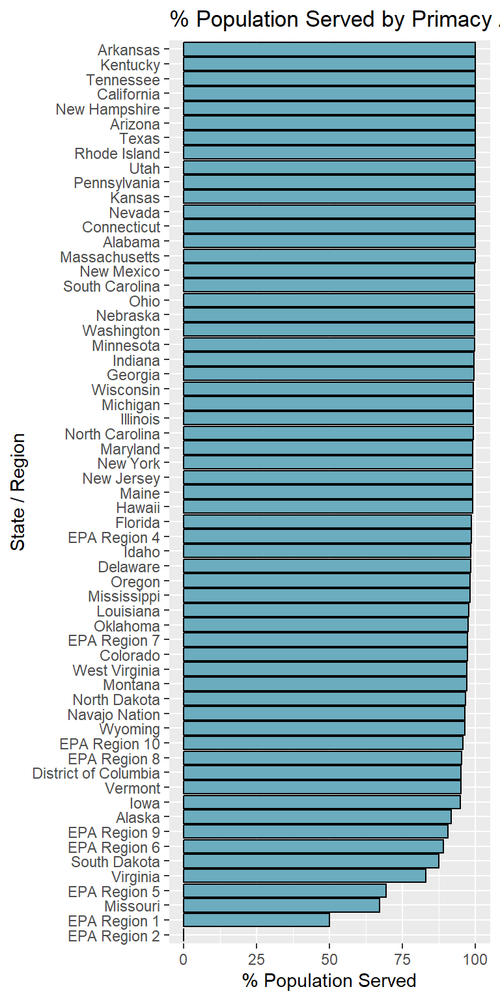
Overlapping Boundaries
Within the final dataset there are instances where two or more boundaries occupy the same area. Theoretically two or more systems can occupy a single block (the spatial scale of the model) but this is known to be rare. Overlaps usually occur in two scenarios:
- State boundaries overlapping modeled boundaries: Figure 7 shows an example of Altoona, IA (modeled) overlapping the state supplied boundary of Des Moines. In this example the modeled boundary for Altoona appears correct. Altoona has a unique PWS. However, the state supplied boundary didn’t “erase” the Altoona system from the service area boundary. This conflict is a function of course or inaccurate state supplied boundaries.
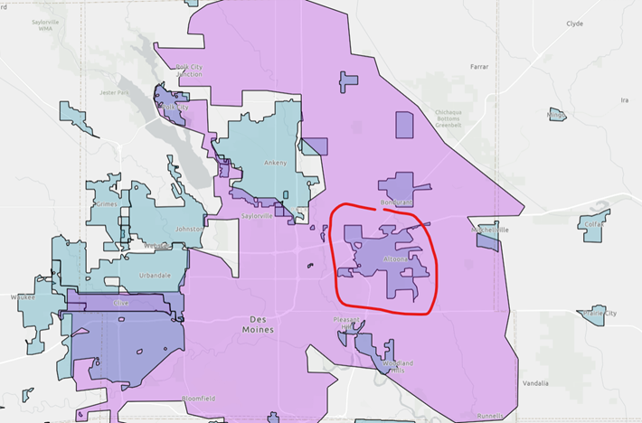
- State boundaries overlapping other state boundaries: Figure 8 shows an example of two state systems overlapping each other. Because these are state supplied boundaries, nothing can be done to resolve this issue. They are either incorrectly drawn or multiple systems serve approximately the same areas.
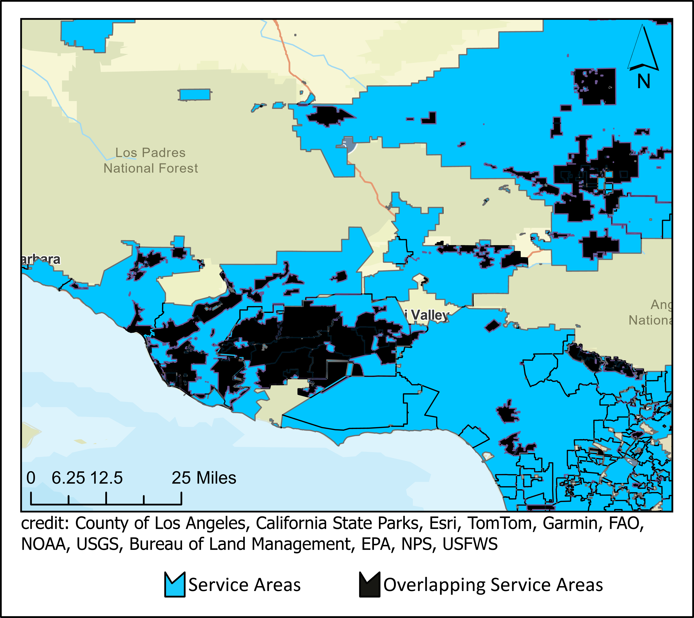
Incorrect Locations
All models have error. Trying to accurately model such a complex human phenomenon such as public drinking water infrastructure is difficult. The drivers that manifest a public drinking infrastructure—economic, social, environmental—is also complex and varies from state-to-state, community-to-community. The decision tree model was trained on 3 states and the random forest was trained on 6 states. This limited geographic range creates bias in the model and may not represent different drinking water infrastructure assumptions that may be relevant in one state, but not in others. One known issue is the poor accuracy of rural water systems serving very rural geographies. Our decision tree dataset was trained on states with a fairly urban population and states that didn’t have very many rural water districts to train the model on. South Dakota, for example, is a state with many rural water districts that cover large swaths of the rural landscape. We deliberately avoided including such districts in our training dataset because rural water districts are unique to only some states. Generally speaking, rural farmland does not have public water—so we did not want to train a model that saw farmland as being served by public water. Because of this model bias, modeled rural water districts are a known issue in our model and are typically not modeled accurately.
Missing Systems
Why can some systems not be modeled? Besides the issue of systems being too small to model, there is another reason. The model requires geographic signals, or clues, to accurately place a service area boundary on the map. These geographic clues come primarily from two sources: 1.) SDWIS locations such as wells, intakes, and treatment plants and 2.) SDWIS reported system information such as ‘City Served’. These signals help the model triangulate an appropriate geography for the service area. Approximately a dozen states don’t report “City Served’. In addition some systems don’t have corresponding SDWIS point locations or the information they provide is incorrect. For these reasons, a good portion of the systems that could not be modeled were not modeled. For example, Figure 9 shows the vast majority of systems we could not model report less than 100 connections. Certain types of systems are also difficult to model. As represented in Figure 10, the areas we struggle to model are areas like mobile home park or subdivisions.


Kentucky
According to the state of Kentucky, about 95% of Kentuckians have access to public drinking water (Water 2022). Kentucky is relatively unique in the broad reach of their water systems to rural areas. While Kentucky does not publish service area boundaries, We received water line data from the state of kentucky, associated with PWSIDs, which delineated the main water lines. To delineate service areas, Voronoi polygons (also known as Thiessen polygons) were generated from service line data. It should be noted that the Voronoi polygons were derived from state supplied data, but the polygons themselves are not state supplied.
Florida
For some state supplied boundaries in Florida, one polygon was associated with multiple PWSIDs. We are unable to disaggregate these multiple systems from their single geography. For these features in the dataset, you will see multiple PWSIDs within the ‘PWSID’ field.
Code and Additional Resources
The data curation, modeling and analysis for this work was done using R (R Core Team 2022) and R Studio (Posit team 2023). All code can be viewed in the EPA agency GitHub page available at: https://github.com/USEPA/ORD_SAB_Model. Additional information is also available in this repository such as source information for boundary data obtained from state and utility sources.
Appendix A
I am grateful for the insightful comments offered by the anonymous peer reviewers at Books & Texts. The generosity and expertise of one and all have improved this study in innumerable ways and saved me from many errors; those that inevitably remain are entirely my own responsibility.
References
Act, Safe Drinking Water. 1974. “Safe Drinking Water Act.” In Enacted by the 93rd United States Congress. Effective. Vol. 88.
Dorman, Michael. 2022. Nngeo: K-Nearest Neighbor Join for Spatial Data. https://CRAN.R-project.org/package=nngeo.
EPA, U. S. 2023. “Providing Safe Drinking Water in America: National Public Water Systems Compliance Report.” https://www.epa.gov/compliance/providing-safe-drinking-water-america-national-public-water-systems-compliance-report.
EPA, US. 2022. “Information about Public Water Systems.” https://www.epa.gov/dwreginfo/information-about-public-water-systems.
HIFLD. 2023. “Homeland Infrastructure Foundation-Level Data.” https://services1.arcgis.com/Hp6G80Pky0om7QvQ/arcgis/rest/services/Mobile_Home_Parks/FeatureServer/0.
Manson, Steven M, Jonathan Schroeder, David Van Riper, Katherine Knowles, Tracy Kugler, Finn Roberts, and Steven Ruggles. 2023. “IPUMS National Historical Geographic Information System: Version 18.0.”
Microsoft. 2023. “US Building Footprints.” https://github.com/microsoft/USBuildingFootprints?tab=readme-ov-file.
Posit team. 2023. RStudio: Integrated Development Environment for r. Boston, MA: Posit Software, PBC. http://www.posit.co/.
R Core Team. 2022. R: A Language and Environment for Statistical Computing. Vienna, Austria: R Foundation for Statistical Computing. https://www.R-project.org/.
REGRID. 2023. “REGRID Parcels Feature Service.” https://epa.maps.arcgis.com/home/item.html?id=75da303642e74f4b8b25caa6c1bbfad0.
Toccalino, Patricia L, Julia E Norman, and Kerie J Hitt. 2010. “Quality of Source Water from Public-Supply Wells in the United States, 1993-2007.” US Geological Survey.
Water, Kentucky Division of. 2022. “Drinking Water.” https://eec.ky.gov/Environmental-Protection/Water/Drinking/Pages/Drinking.
Footnotes
This is similar to the EPA definition of a public water provider: “A public water system provides water for human consumption through pipes or other constructed conveyances to at least 15 service connections or serves an average of at least 25 people for at least 60 days a year.” https://www.epa.gov/dwreginfo/information-about-public-water-systems↩︎